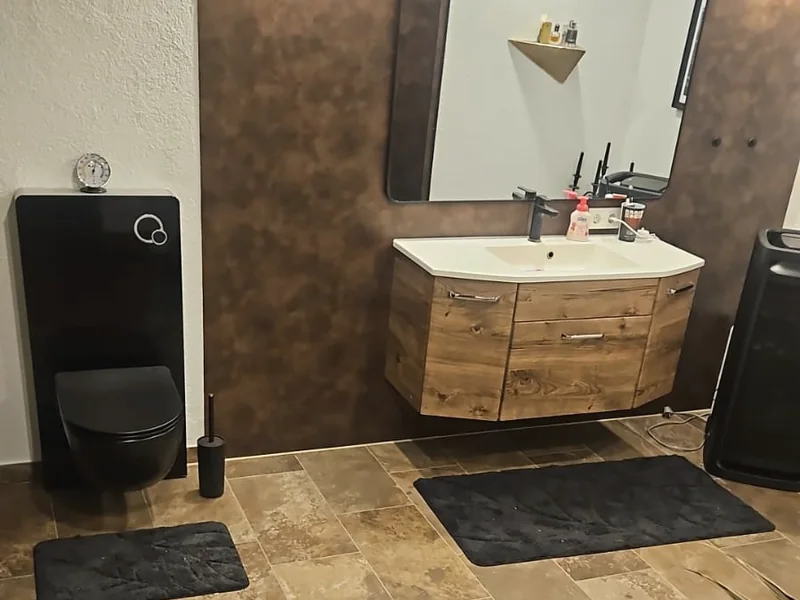

Christian Liesegang · Woffleben bei Nordhausen
Bad modernisieren.
Bei Nordhausen.
Ein Badezimmer soll zu den Menschen passen, die es täglich nutzen. Ich unterstütze Sie bei der altersgerechten und barrierearmen Modernisierung Ihrer Bad- und Wohnbereiche – mit persönlichen Absprachen und der Koordination der erforderlichen Fachgewerke.
Bedürfnisse und Arbeiten gemeinsam abstimmen
Wenn sich der Alltag oder die Anforderungen an das Wohnen verändern, lohnt sich ein genauer Blick auf das bestehende Bad. Wir besprechen, was Sie verändern möchten, welche Bereiche betroffen sind und welche Arbeiten für Ihr Vorhaben zusammenkommen.
Als selbstständiger Baudienstleister aus Woffleben begleite ich die Abstimmung und die vereinbarten Modernisierungsarbeiten. Die tatsächliche Situation vor Ort und Ihre Wünsche bilden die Grundlage dafür.
Fachgewerke sinnvoll zusammenbringen
Zu einer Badmodernisierung können unterschiedliche Arbeiten gehören. Ich koordiniere die erforderlichen Fachgewerke und halte die Absprachen mit Ihnen im Blick. Sanitärinstallationen und Sanitärfacharbeiten übernehmen geeignete Fachbetriebe.
Auch bei Sanierungsmaßnahmen im Zusammenhang mit Pflege- und Krankenkassen unterstütze ich Sie organisatorisch. Welche Schritte und Unterlagen für Ihr konkretes Vorhaben erforderlich sind, klären wir individuell.
Vom ersten Gespräch zur Umsetzung
Beschreiben Sie bei Ihrer Anfrage das vorhandene Bad, Ihre gewünschten Veränderungen und den Einsatzort. Fotos können helfen, die Ausgangssituation zunächst einzuordnen. Danach besprechen wir die erforderlichen Maßnahmen und die Beteiligung weiterer Fachbetriebe.
Während der vereinbarten Arbeiten bleibe ich Ihr persönlicher Ansprechpartner. Mein Einzelunternehmen besteht seit April 2013.

Häufige Fragen
Übernehmen Sie auch die Sanitärinstallation?
Sanitärinstallationen und Sanitärfacharbeiten übernehmen geeignete Fachbetriebe. Ich unterstütze die Modernisierung und koordiniere die erforderlichen Fachgewerke.
Unterstützen Sie bei altersgerechten Umbauten?
Ja. Altersgerechte und barrierearme Badmodernisierung gehört zum angebotenen Leistungsbereich. Die gewünschten Veränderungen und die Anforderungen an Ihr Bad besprechen wir persönlich.
In Woffleben, Ellrich, Nordhausen und der Region
Von Woffleben aus bin ich in Ellrich, Nordhausen und der Region unterwegs: etwa 80–100 km im Umkreis oder rund 1,5 Stunden Fahrzeit. Dazu zählen nach Abstimmung auch Einsätze im Raum Göttingen, Erfurt, Halle (Saale), Kassel und Braunschweig. Ihren konkreten Einsatzort besprechen wir bei der Anfrage.
Einsatzgebiet auf der Karte ansehen